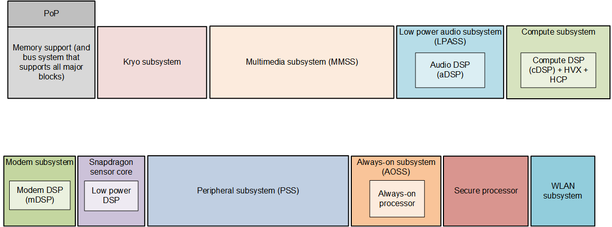
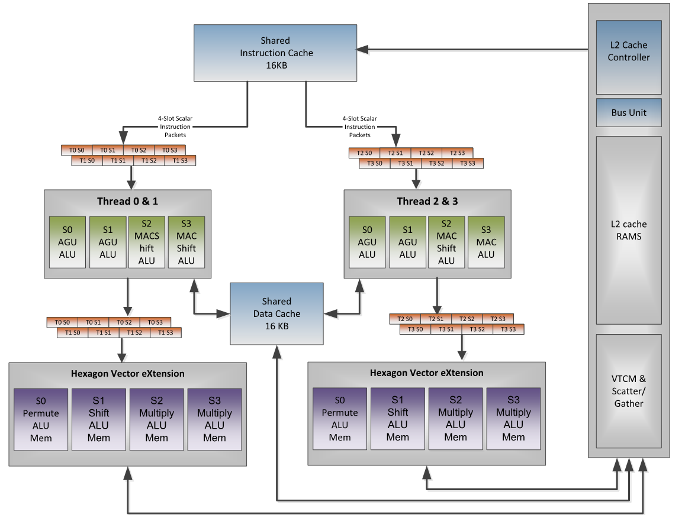
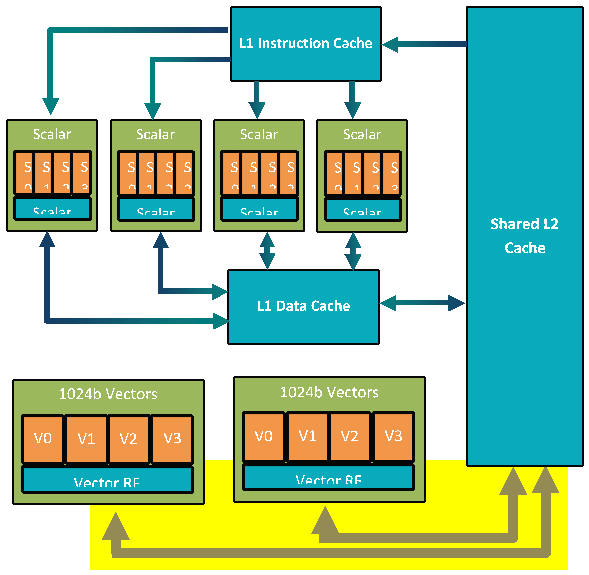

Hexagon SDK overview
The Qualcomm Hexagon™ SDK provides a set of tools, software, and documentation that assist developers in running applications on Qualcomm devices and leveraging the Hexagon DSPs.
This page provides a brief overview of the Qualcomm embedded compute devices that this Hexagon SDK supports, the process of writing applications running on the CPU and offloading tasks onto the DSP, and how the Hexagon SDK tools and documentation facilitate this process.
Prerequisites
The Hexagon SDK installer requires the following:
- 64-bit Windows 7, Windows 8, or Windows 10
- 64-bit Ubuntu 16.x or later
Getting started
For a quick start, browse through the base SDK examples and run some of the examples on simulator and on target. Each of these examples illustrate a few tools or software features as explained in the list of examples table. The calculator example is a good example to start with as it introduces a number of basic concepts.
To gain a more solid understanding of the SDK and cDSP that it supports, review the rest of this section. Then browse through the Tools and Software tabs to learn about the development tools and software components available in the SDK. For detailed documentation on a specific topic, see the reference manuals and use the examples for a better understanding.
SDK components
The Hexagon SDK includes the following components, each covered in one of the documentation tabs and intended to help software developers as follows:
- Development Tools: Building, running, debugging, and profiling Hexagon-based applications
- Software Developing Hexagon-based applications for the run-time ecosystem on Qualcomm devices
- Code Examples: Source projects illustrating different aspects of developing Hexagon-based applications
- Reference Documentation: Additional resources with in-depth information
- Add-ons: Additional packages available for installation into this SDK
Directory Structure
The Hexagon SDK tree structure is as follows:
/docs Hexagon SDK documentation
/examples Code examples
/utils Helper scripts to automate tasks commonly performed by developers
/inc Public header files needed to access system-level software libraries
/libs System-level software libraries and Hexagon libraries
/ipc Inter-processor communication libraries providing FastRPC support
/rtos Real-time DSP OS
/tools Development tools (see Tools tab)
/add-ons SDK add-ons (see Add-ons tab)
Development process
The process of developing a Hexagon-based feature for a Qualcomm device typically involves several of the following steps (not necessarily always in this order).
-
Develop the core algorithm of interest in C/C++ (for example, in an x86 environment).
-
Once the workload is functional and the top-level API's are defined, build it as a Hexagon shared library and an executable test driver that exports main(), as is done with the examples in this SDK.
-
Build, execute, debug, and profile the test driver on the Hexagon ISS (Instruction Set Simulator) and/or target device.
-
Prepare to integrate the shared Hexagon library into a run-time HLOS application or multimedia framework. To do this, build an inter-processor interface for the shared Hexagon library by using the SDK's FastRPC framework. This might require updating your shared library and test driver to use the RPC interface.
-
Optimize and enhance the Hexagon shared library using the techniques documented in this SDK, such as:
- Multi-threading the Hexagon workload
- Utilizing the System Libraries and Hexagon DSP libraries of this SDK
- Optimizing the core loops by implementing cache pre-fetching, tiling, writing intrinsics or assembly, or in applicable cases, Halide, TVM, or other compiler-based frameworks.
- Iterating the optimizations with profiling and tracing to reduce cache misses and other stalls until satisfactory performance is reached.
Architecture overview
This section provides an overview of Hexagon processors supported by this SDK and used for embedded advanced computing applications.
Qualcomm Snapdragon processors
Qualcomm Technologies, Inc. (QTI) offers a large and increasing number of variants of the Snapdragon chipset solution. The Snapdragon mobile product family is organized into five product tiers. The highest tier includes the SM8xxx series (premium) and SM7xxx series (high tier). Lower tiers include the SM6xx, SM4xx and SM2xx series.
These product tiers are differentiated by scalable computing resources for the CPU, GPU, and DSP processors. When moving from low to premium tiers, these processor resource changes are characterized by an increasing number of processors, increasing processor complexity, and increasing clock speeds. For a full list of products, visit the space on mobile processors on our website.
The following diagram provides an overview of one representative premium tier product: the SM8150 chipset. The processing units include a Kryo CPU, an Adreno 640 GPU, and four Hexagon DSPs, each devoted to a specific application space: sensor (sDSP), modem (mDSP), audio (aDSP), and compute (cDSP).

Chip and DSP variants
Each Qualcomm chip includes multiple Hexagon DSPs such as the compute DSP (cDSP), audio DSP (aDSP), and sensor DSP (SLPI -- Sensor Low Power Island). Each of these DSPs implement a specific Instruction Set Architecture (ISA) version. The ISAs supported by this Hexagon SDK are the following:
- V65
- V66
- V68
The compute DSP, which is intended for compute-intensive tasks such as image processing, computer vision, and camera streaming, also includes an instruction set extension for fixed-point vector operations called Hexagon Vector eXtensions (HVX). Starting with Lahaina, the cDSP is being referred to as Qualcomm® Hexagon™ Tensor Processor to reflect its ability to process neural network tensor data efficiently. In the Hexagon SDK, all references to cDSP apply to Hexagon Tensor Processor also.
The reference documentation contains a section that lists the various reference manuals for each of these ISA versions, with or without HVX extensions.
Compared to the host CPU, the DSP typically runs at a lower clock speed but provides more parallelism opportunities at the instruction level. This often makes the DSP a better alternative in terms of throughput and/or power consumption. As a result, it is preferable to offload as many large compute-intensive tasks as possible onto the DSP to reduce power consumption of the device and free up cycles on the CPU for additional features. RPC is the main mechanisms allowing to offload tasks onto the DSP.
The following table provides a quick summary of some of the devices supported by the current Hexagon SDK and the key cDSP features available in these devices.
| Chip number | Chip name | cDSP | Turbo L1 | Turbo | Nominal | HVX | HMX | L2 | VTCM |
|---|---|---|---|---|---|---|---|---|---|
| SM8350 | Lahaina | V68 | 1.5 GHz | 1.4 GHz | 1.2 GHz | 4 | 1 | 1 MB | 4 MB |
| SM8250 | Kona | V66 | 1.5 GHz | 1.4 GHz | 1.2 GHz | 4 | 0 | 1 MB | 256 KB |
| SM8150 | Hana | V66 | 1.5 GHz | 1.3 GHz | 1.2 GHz | 4 | 0 | 1 MB | 256 KB |
| SM7250 | Saipan | V66 | 1.5 GHz | 1.4 GHz | 1.2 GHz | 4 | 0 | 1 MB | 256 KB |
| SM6250 | Rennell | V66 | 1.2 GHz | 1.2 GHz | .95 GHz | 2 | 0 | 512 KB | 256 KB |
| SM4250 | Kamorta | V66 | - | 1.0 GHz | .83 GHz | 2 | 0 | 512 KB | 256 KB |
Devices are grouped in families identified by the highest tier device in that family. For example, the Lahaina family includes the Lahaina, Cedros, and Bitra.
| Tier | Hana family | Kona family | Lahaina family |
|---|---|---|---|
| 8xxx | Hana (SM8150) | Kona (SM8250) | Lahaina (SM8350) |
| 7xxx | Moorea (SM7150) | Saipan (SM7250) | Cedros (SM7xxx) |
| 6xxx | Rennell (SM6250) | Bitra (SM6xxx) | |
| 4xxx | Kamorta (SM4250) | ||
| ### cDSP |
The following diagram provides an overview of the processing units within the cDSP and how they connect to the memory cache.

Hexagon core
The Hexagon core is made of several DSP hardware threads — four or six on most current cDSPs. Each DSP hardware thread has access to the Hexagon scalar instructions, which perform fixed-point and floating-point operations on single or pairs of 32-bit registers.
Each data unit is capable of performing a load or store up to 64-bit wide, or 32-bit scalar ALU operation.
Each execution unit is capable of 16/32/64-bit vectorized multiply, ALU, bit manipulation, shift or floating-point operations.
Prior to V66, the scalar floating-point and multiplier resources were shared by all execution units. This meant that all combined hardware threads performed a maximum of one of each operation every processor cycle. Starting with V66, each cluster has its own floating-point and multiplier resources.
As shown on the diagram above, a cluster refers to a pair of threads (Thread 0&1 and Thread 2&3). Within a cluster, the two threads typically commit instruction packets on alternating clock cycles because most instructions require at least two clock cycles to complete. In the best case, each cluster completes one instruction packet on every DSP clock cycle, yielding a total throughput of (2 * DSP Clock) instruction packets per second as long as stalls are avoided. (For guidelines on minimizing latencies, see the discussion on DSP optimization techniques.)
Hexagon HVX unit
HVX is a coprocessor that adds 128-byte vector processing capabilities to the cDSP. Scalar hardware threads use the HVX coprocessor by accessing an HVX register file, also referred as HVX context.
As shown in the V66 block diagram above, instruction packets flow through the scalar Hexagon pipeline, where any included scalar instructions are processed. Instructions then continue onto the HVX Vector FIFO. As such, HVX instructions can be intermixed with scalar instructions, even within the same instruction packet.
Hexagon HMX unit
HMX is a matrix engine introduced with Lahaina. It provides very high throughput for convolution operations.
HMX instructions are not directly exposed by this SDK. HMX acceleration is only made available through machine learning libraries and tools such as the QNN SDK, which allows Neural Networks to run on Lahaina and makes heavy use of the HMX engine.
Memory subsystem
The following diagram provides an overview of the DSP memory subsystem.

The cDSP has a two-level cache memory subsystem. L1 is only accessible to the scalar unit, making L2 the second level memory for the scalar unit and the first level memory for the HVX coprocessor.
L1 is write-through only. This allows the caches to be hardware coherent. To maintain coherency, if an HVX store hits in L1, the L1 line is invalidated.
The vector units support a variety of load/store instructions, including support for unaligned vectors and per-byte conditional stores.
A pipelined vector FIFO is in place for the HVX hardware to read L2 contents and hide L2 read latencies from the programmer. For a more in-depth discussion on memory latencies, see the memory section in the optimization guidelines.
The cDSP also includes a Tightly Coupled Memory (TCM) called VTCM (Vector TCM). VTCM is a low-power memory that provides approximately twice the bandwidth of L2 and reduces store-to-load latencies. VTCM is required for performing scatter-gather lookup operations and for using the HMX engine.
Development boards
This section provides a high-level overview of board options that are available to developers working with the Hexagon compute DSP. For more details, see the websites of each provider.
| Name | Provider | Description |
|---|---|---|
| Open-Q For example: SDM660 |
Qualcomm | HDK made of two components: SOM powered by Snapdragon processor and including a 64-bit multicore CPU, Qualcomm Adreno GPU, Hexagon DSP along with Android OS. Carrier board to provide additional connectivity and display capabilities. |
| DragonBoard™ development kit For example: SM8150 |
Arrow Electronics | Single small development board |
| MTP For example: MTP8250, MTP8350 |
Qualcomm | Earliest reference platforms to become available after new processors come out. Limited supply. Only provided through direct engagements. |
| QRD For example: QRD8350 |
Qualcomm | Qualcomm reference design in mobile phone form factor. |
| IP Camera For example: SDA626, SA8155P, RB3 |
Thundercomm | IP Camera Reference Design, Automotive Development Platform, Robotics Platform, VR development kit, and so on. |